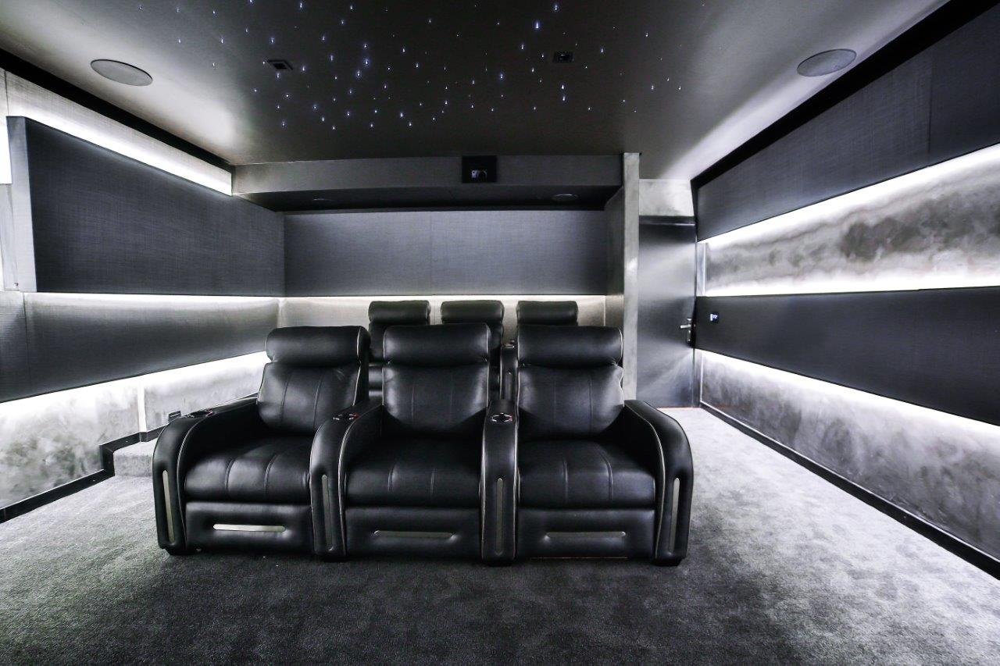

Creating A Smart Home Theatre System:
An Ultimate Guide
The constant innovation and development of home entertainment technology have made it possible for
homeowners to create immersive and engaging cinema-like experiences within the comfort of their homes.
By combining smart home automation with advanced audio-visual equipment,
you can design a bespoke smart home theatre system tailored to your preferences, turning each movie
night or
binge-watching session into a spectacular and memorable event.
Here are the essential components of a smart home theatre system:
High-Definition Displays: Consider investing in a high-quality 4K Ultra
HD or 8K display,
such as an OLED or QLED TV, or a premium projector capable of delivering crisp and vibrant images.
Powerful Audio System: Equip your home theatre with a surround sound
system that delivers
rich, clear, and immersive audio. Opt for a 5.1 or 7.1 channel system, or explore cutting-edge options
such
as Dolby Atmos.
Smart Lighting Controls: Use smart lighting to create the perfect
ambience while watching
your favorite movie or TV show. Intelligent lighting can be programmed to adjust brightness, colors, and
even create scenes that sync with the on-screen visuals.
utomation and Control: A Employ a smart home automation system that
enables you to manage
every aspect of your home theatre experience, from adjusting volume levels and playback controls to
controlling lighting and temperature, all through a single unified platform.
By incorporating these essential elements, you will lay the foundation for an
extraordinary smart home
theatre experience. Design your dream home theatre, paying attention to layout, acoustics, and other
critical aspects that contribute to an ideal viewing and listening environment.
Let’s transform casual movie lovers into smart home theatre enthusiasts, empowering them to create an
exceptional and personalized entertainment space. 🌟🎥🎶
Back To Home...